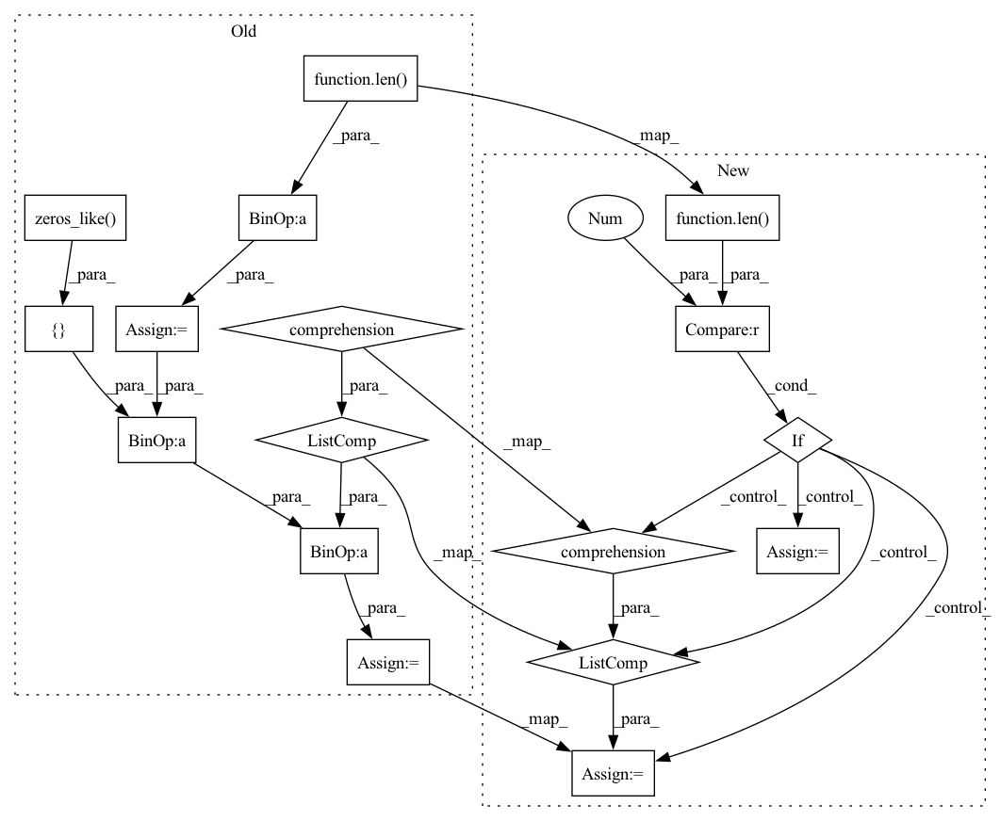

Pattern ID :5636

Before Change
return self.action
def final_step(self):
pad_num = self.neighbor_num - len(self.neighbors)
self.neighbor_action = t.stack([n.get_action() for n in self.neighbors] +
[t.zeros_like(self.action)] * pad_num, dim=1) // (B, N, A)
self.neighbor_action_all.append(self.neighbor_action)
return self.action
After Change
def final_step(self):
// dim (B, neighbor_num, action_dim)
if len(self.neighbors) > 0:
self.neighbor_observation = t.stack([n.observation for n in self.neighbors], dim=1)
else:
self.neighbor_observation = None
self.neighbor_action_all.append(self.neighbor_action)
return self.action
In pattern: SUPERPATTERN
Frequency: 3
Non-data size: 17
Instances
Fragment ID: 19838666
Project Name: iffix/machin
Commit Name: afd28b6f8aec78ee14891633a07c0bedcecf303c
Time: 2020-04-19
Author: hanhanmumuqq@163.com
File Name: models/tcdn/agent.py
M Class Name: SwarmAgent
N Class Name: SwarmAgent
M Method Name: final_step(1)
N Method Name: final_step(1)
M Parent Class:
N Parent Class:
M File Name: models/tcdn/agent.py
N File Name: models/tcdn/agent.py
M Start Line: 149
M End Line: 151
N Start Line: 188
N End Line: 193
'>
Before Change
self.neighbor_action_all = []
def act_step(self):
pad_num = self.neighbor_num - len(self.neighbors)
self.neighbor_observation = t.stack([n.observation for n in self.neighbors] +
[t.zeros_like(self.observation)] * pad_num, dim=1) // (B, N, O)
// generate action with actor
self.org_action = self.actor(self.observation, self.neighbor_observation, // (B, A)
self.get_history_as_tensor())
After Change
def act_step(self, time_step):
// dim (B, neighbor_num, observation_dim)
if len(self.neighbors) > 0:
self.neighbor_observation = t.stack([n.observation for n in self.neighbors], dim=1)
else:
self.neighbor_observation = None
// generate action with actor
// dim (B, action_dim)
'>
Fragment ID: 19838663
Project Name: iffix/machin
Commit Name: afd28b6f8aec78ee14891633a07c0bedcecf303c
Time: 2020-04-19
Author: hanhanmumuqq@163.com
File Name: models/tcdn/agent.py
M Class Name: SwarmAgent
N Class Name: SwarmAgent
M Method Name: act_step(2)
N Method Name: act_step(1)
M Parent Class:
N Parent Class:
M File Name: models/tcdn/agent.py
N File Name: models/tcdn/agent.py
M Start Line: 119
M End Line: 121
N Start Line: 146
N End Line: 157
'>
Before Change
return self.action
def negotiate_step(self):
pad_num = self.neighbor_num - len(self.neighbors)
self.last_action = self.action
self.neighbor_action = t.stack([n.get_action() for n in self.neighbors] +
[t.zeros_like(self.action)] * pad_num, dim=1) // (B, N, A)
self.neighbor_action_all.append(self.neighbor_action)
change = self.negotiator(self.observation, self.neighbor_observation,
self.get_history_as_tensor(),
After Change
def negotiate_step(self, time_step):
self.last_action = self.action
// dim (B, neighbor_num, observation_dim)
if len(self.neighbors) > 0:
self.neighbor_observation = t.stack([n.observation for n in self.neighbors], dim=1)
else:
self.neighbor_observation = None
self.neighbor_action_all.append(self.neighbor_action)
'>
Fragment ID: 19838661
Project Name: iffix/machin
Commit Name: afd28b6f8aec78ee14891633a07c0bedcecf303c
Time: 2020-04-19
Author: hanhanmumuqq@163.com
File Name: models/tcdn/agent.py
M Class Name: SwarmAgent
N Class Name: SwarmAgent
M Method Name: negotiate_step(2)
N Method Name: negotiate_step(1)
M Parent Class:
N Parent Class:
M File Name: models/tcdn/agent.py
N File Name: models/tcdn/agent.py
M Start Line: 129
M End Line: 135
N Start Line: 161
N End Line: 174